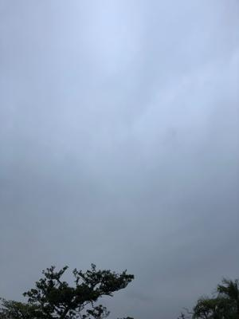
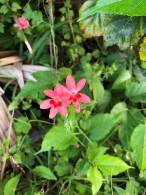

うるがいの話 ある日
最新: 開放感【うるがいの話 ある日】とは 一日だけのプログです
『うるがいの話』の最新一日だけのプログで、通信料が少なく経済的だ。カニの画像をクリックすると全ての日付が載る『うるがいの話』サイトを表示します
|
|
【うるがいの話】 うるがい(ｳﾙｶﾞｲ urugai)とは、『もずくがに』の名前でとても大きくなります。 |
|---|---|
|
|
【カミマヤーの話】 猫のことを方言でマヤーといいます。カミマヤー（kamimayaa）とは、神の猫のことです。 |
|
【たながぁの音楽】 たながぁ（ﾀﾅｶﾞｰtanagaa）とは手長えびのことで、何種類かあり大きいのは車 エビぐらいになります。 |

|
【ぶながぁの話】 ぶながー(bunagaa)とは、赤い髪の毛、赤い身体、そして身長は１ｍ２０ｃｍ ぐらい、川の蟹を食べているの目撃された。場所は沖縄県国頭郡大宜味村のと ある村僕の隣近所に住んでいる爺さんから、聞いた話です。 |
|
|
【ギーマの話】 ギーマ(giima)とは、山原の里山に咲くスズランに似た、 花を付けます。実は食べられます、 気が付くと口の周りが紫になっています。 |
2022年04月16日 (土）開放感
15:33

とりあえず副業研修の課題対応から、開放されているので気持ち的に楽である
で、昨日の続きだが、インタビュの会話がマスクをしているのと教材として会
話なのか、シナリオが準備されていないこともあり余り自動では記録できなか
った、残念。その昔、とあるプロジェクトの議事録を作成するため、同僚のヤ
マカ君と折半で小さな録音機を買った。でも、使えなかった。そのあと、録音
から議事録を作成したのは数回で、あとはこの作業が大変なことが分かったの
でしばらくすると録音機は使わないことにした。そのことを、テレップ（字幕
）を作成しながら懐かしく思った。録音機はプロジェクトが終わったとき、ヤ
マカ君がもらった。世の中は変わり、テレビなどをみると録音機を使っている
。んー、時代は変わった。なお、インタビューのテレップ（字幕）を作成する
とき、何べんも録音を聴くので必須だが。ただ、会話そのものが、文書にして
も分かる言葉で話していないと話と字幕が一致しないので、イラとする。それ
が言いたかった。放送局でバイトした時にみた台本も、そのためなんだろう。
実際の本物のインタビューでは、台本もとにするのだろうと・・。ぶつぶつ、
ま、いいか。

ジョギングコースの途中にある畑の中で、ピンクで花びらが６つの雑草を撮っ
たので名前を３０分程、ネットで調べるとどうも自生している雑草でなく畑の
持ち主が、植えたのかなと？花が好きだったんだろう多分。